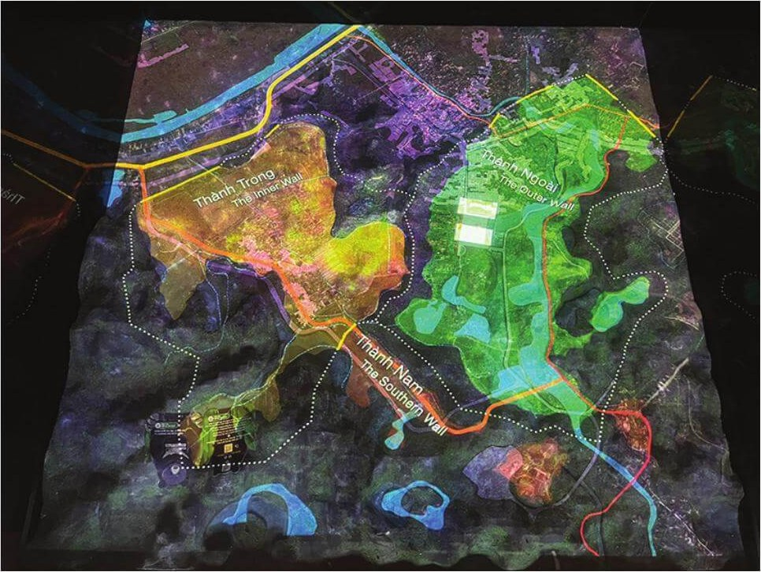

CỐ ĐÔ HOA LƯ
丁朝・前黎朝の文化遺産展示館

お客様にお知らせします。ホアルー都の輝かしい形成と発展を生き生きと証明するために、1977年に考古学者たちはこの地域で大規模な発掘調査を実施しました。その結果、考古学者たちは10世紀の丁（ディン）朝 - 前黎（ティエンレ）朝時代に属する宮殿のレンガ敷きの中庭の領域を無事に発見しました。
この地域での発掘調査の結果、昔のホアルー都の中心エリアが、現在のホアルー古都遺跡の中心でもあることが科学的に確認されました。
展示館は現在、科学的な資料や視覚的な芸術的解決策と組み合わせて、豊富なオリジナル遺物を多数保存しており、10世紀のホアルー都の全体像や、現代生活における遺跡の価値の保存と活用活動の概要を示しています。

展示空間に足を踏み入れると、お客様は10世紀の代表的な遺物である壺、甕、鉢、皿などを鑑賞することができます。特に、丁 - 前黎時代に誕生した「太平興宝（タイビンフンバオ）」と「天福鎮宝（ティエンフックチャンバオ）」という硬貨のコレクションは、民族の独立意識を肯定するだけでなく、国の経済発展にも貢献しました。
都の建設に使用された非常に貴重な材料のコレクションもここで展示されており、「大越国軍城磚（ダイヴィエト・クオッククアン・タインチュエン）」という文字が刻まれたレンガ、蓮の花や鳳凰の鳥の模様が装飾されたレンガ、当時の宮廷建築特有のさまざまな種類の筒瓦などがあります。
観光客は、丁先皇の長男である南越王・丁匡琏（ディン・クアン・リエン）が建立させた仏経柱（ダラニ塔）を鑑賞することができます。これはオリジナル遺物であり、ベトナムの碑記および石刻のシステムにおいて非常に稀な特徴を持つ唯一無二の類型です。経柱に刻まれた銘文の内容は、丁朝時代の宗教、社会関係、土地の分与制度などの問題を深く反映した、無数の貴重な歴史的資料を提供しています。注目すべきは、これが現在まで保存されている自主封建時代の中で最も初期の年代を持つ碑記であるということです。これらの特別な歴史的・文化的価値により、2024年に仏経柱のコレクションは、首相が署名した決定により国宝として認定される栄誉に浴しました。
展示されている遺物を通じて、丁 - 前黎時代の遺物の装飾テーマは、表現方法は素朴でシンプルでありながら、強い民族文化のアイデンティティを持っていることがわかります。まさにその芸術的基盤が、続く歴史的時期においてベトナム文化が輝かしく発展するための基本的な前提を作り出したのです。
